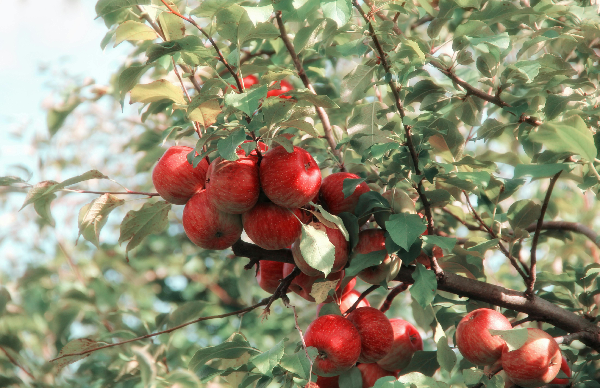

ميوه

جغرافيه
موقعیت: د افغانستان په مرکزي برخه کې د کابل په جنوب لوېديځ کې موقعيت لري.
شاوخوا: نږدې 4,500 مربع کیلومتره (1,740 مربع میل).
توپوگرافي:د څو وادیونو سره د غرنۍ خاورې لخوا مشخص شوی.
دیموګرافیک
نفوس: نفوس یې له 800,000 څخه ډیر اټکل شوی.
قومونه:په دې کې بېلابېل توکمونه شامل دي، په عمده توګه پښتانه او هزاره.
اقتصاد
اصلي صنایع: اقتصاد تر ډېره په کرنه او تجارت ولاړ دی.
کرنه: په عمده فصلونو کې غنم، وربشې او مېوې لکه مڼې او انګور شامل دي.
کلتور
میراث: وردګ د مختلفو دودیزو دودونو او جشنونو سره بډایه کلتوري میراث لري.
تعلیم:د څو ښوونځیو او تعلیمي موسسو کور، که څه هم په ځینو سیمو کې زده کړې ته لاسرسی یوه ننګونه ده.
تاریخ
پخوانی وختونه:دا سیمه اوږد تاریخ لري، د مختلفو امپراتوریو په جریان کې تاریخي اهمیت لري.
تازه تاریخ: دغه ولایت په تېرو څو لسیزو کې د روانو جګړو او بې ثباتۍ له امله له سترو ننګونو سره مخ دی.
حکومت
اداره: د وردګو ولایت د مرکزي حکومت لخوا ټاکل شوی والي لخوا اداره کیږي.
چلنجونه
امنیت: سیمه د تاوتریخوالي او بې ثباتۍ تجربه کړې، په ځانګړې توګه د یاغیانو له امله.
بنيادي جوړښت: د ترانسپورت او روغتیا پاملرنې په برخه کې د زیربنا پراختیا لاهم اړتیا ده.
اوسنی وضعیت
د وردګو په والیت کې وضعیت د پرلپسې امنیتي ننګونو او بشري اړتیاوو سره مخ دی.
د وردګو ولایت د افغانستان د پیچلو تحرکاتو او ټولنیز-سیاسي منظرو د پوهیدو لپاره د پام وړ دی.